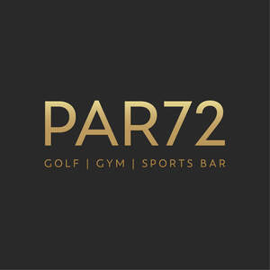

Trade Mark Journal No.2026/011 13 March 2026
UK00004346049 26 February 2026 (41)

- Class 41
- Provision of leisure facilities; Sporting and recreational activities; Entertainment, sporting and cultural activities; Providing facilities for sports recreation; Sports entertainment services; Social club services for entertainment purposes; Corporate hospitality (entertainment); Entertainment services relating to sport; Sports activities; Sports and fitness services; Club services [entertainment]; Sports and fitness; Sporting activities; Providing fitness and exercise facilities; Physical fitness centre services; Leisure services; Providing leisure and recreation facilities; Tuition in recreational pursuits; Providing facilities for recreation activities; Education, entertainment and sport services; Providing facilities for recreational activities; Rental services relating to equipment and facilities for education, entertainment, sports and culture; Education, entertainment and sports; Hospitality services (entertainment); Entertainment club services; Club entertainment services; Recreational services for the elderly; Arranging group recreational activities; Entertainment services in the nature of sporting events; Sporting and cultural activities; Cultural and sporting activities; Conducting of entertainment activities; Gaming services for entertainment purposes; Club recreation facilities (Provision of -); Recreation facilities (Providing -); Providing facilities for recreation; Providing recreation facilities; Entertainment services relating to the playing of golf; Entertainment in the nature of golf tournaments; Entertainment services in the nature of competitions; Provision of recreation facilities; Provision of facilities for recreation; Recreation facilities (Provision of -); Booking of sports facilities; Providing recreational facilities.
PAR72 Performance Limited